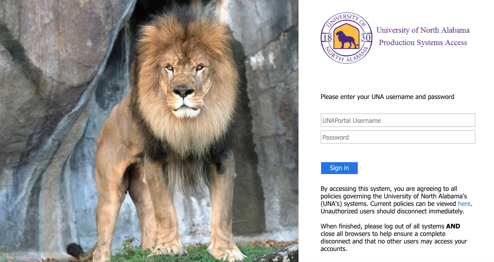
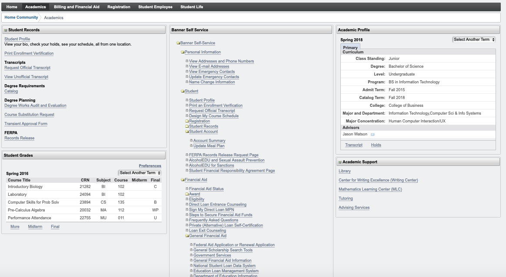

I attempted to redesign the UNA Portal login and User Experience while in the app.
I felt like the login page above was too cluttered and had too much for a login. I attempted a more minimal login design.

I also believed that the user experience of the actual portal interface had too much at the forefront and could be made more minimal and easier to see/use.
With the basic user profile at the top and then the collapsible sections with clear names and links to the other facets of Portal underneath.
LOGIN TO PORTAL HERE
GitHub Repo Located Here
UX Portal Repo